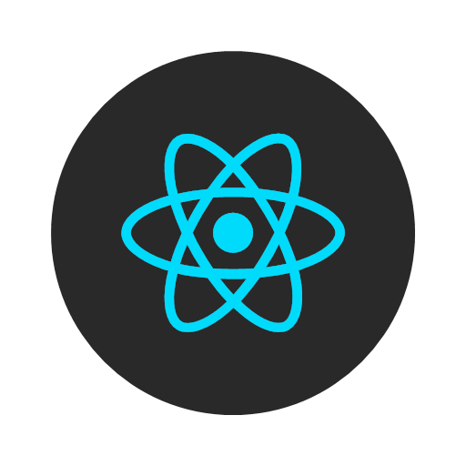

About me
I love Web!
Main Roles
Software Development
Full-Stack Web Development
Software Project Management
Contact
Favorite Tech





Work Experience
February 2016 - Present: Seven Solutions
June 2015 - September 2015: I.R.A.M.
March 2015 - June 2015: Hymans Robertson
June 2014 - August 2014: I.R.A.M.
June 2013 - September 2013: I.R.A.M.
June 2012 - August 2012: I.R.A.M.
Tech Skills
Web Development
Expert
Software Development
Expert
IT Management
High
Project Management
High
Full Stack Web Development
- Design of extraction of information, structure and representation using JSON.
- REST API, design, development and implementation. Use of CURL & Postman.
- Web server & client side development (frontend & back-end): PHP, JavaScript, AJAX, HTML5, CSS3
- Web CSS: Boostrap, W3.CSS, Less, Sass, Charts
- JS Frameworks & Tools: Node, NPM, Express, WebPack Builder, Vue, Angular, React.
- UI design, use of Wireframes, Web Layout.
- Web design: Full control over web project, decision-making over architectonic design and tools.
- Web Javascript testing: Jasmine Framework, TestCafe, Selenium.
- CMS: Wordpress, Joomla
Software Development
- Architectural patterns: Model-View-Controller, Oriental Objects, Microservices, Client-Server, Structural Design Patterns.
- Agile Development: Scrum, Kaban, XP, FDD, DevOps.
- Paradigms and models: Waterfall, Incremental, Prototyping, V model
- Project management: Definition Requisites (RF & NRF), Planning, Designing, Implementation, Execution, Testing.
- Visual Paradigm for visual software design, Enterprise Architect.
- BPM: Business Project Modeling, definition of business procedures
- SQA: Software Quality Assurance
- Orientation to User Experience
IT Management
- Monitoring and Logging tools: Icinga, InfluxData, Grafana, Chronograf, Datadog, Elasticsearch, Nagios, Munin...
- Server configuration, Apache, XAMMP, LAMP, IT maintenance, Virtual machines, Linux, Debian Server, Ubuntu Server, Windows Server 2012, Avira Antivira Server.
- Email Server, Web Server, Application Server, Database Server, LTSP servers
- Bottle.py, SOAPpy
- Installation, maintenance and choce making of Company Software
- Databases: MongoDB, mySQLite, mySQL, SQL
- Puppet.
- Backup management and maintenance, Bacula, RAID, Tapes.
- Client-Server structure.
- Multi-booting, IT, SAS, SATA, AF, RAID.
- SNMP
More Tools & Knowledge
- Automated compilation & testing
- Continuous Integration (CI) with Jenkins
- TDD: CMoka, JUnit, Web Testing, F.I.R.S.T.
- Testing software, PYunit, quality control.
- Containers: Docker
- EPICS (experimental physics and industrial control systems) driver support for Modbus/TCP.
- GNSS interfaces management, control, design and knowledge.
- Timing protocols, PTP, White Rabbit, NTP.
- Development Languages with: C, Python, Scripting/Bash, C#, ASP.NET.
- Marketing strategy, E-Commerce, Google services, SEO, adwords, adSense.
- Social network management.
- Git, GitHub, Bitbucket, GitLab
- Atlassian Suite, Google GSuite, Microsoft Suite for Teams
Education
Master's Degree in Software Development, Computer
Software Development
University of Granada · (2017 2018)
University of Granada · (2017 2018)
Bachelor of Engineering (B.E.), Software development
University of Granada · (2009 2015)
University of Granada · (2009 2015)
Bachelor of Engineering (B.E.), Computer Software Engineering
Glasgow Caledonian University · (2013 2014)
Glasgow Caledonian University · (2013 2014)
School Sagrado Corazon de Jesus
Granada School, Science · (1997 2009)
Granada School, Science · (1997 2009)